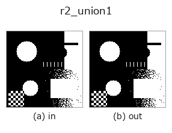

region op• 資料種類:region → region
• 呼叫:fullseye.apply(img, "r2_union1", a=0.5, b=0.5)(2-D 的模型是一張圖 + 兩個純量旋鈕 a,b∈[0,1])
• HALCON 對應:union1(其含義與參數可參考 HALCON 手冊)
• GPU:有(r2_union1,device="cuda" 走快速路徑)

*圖為在 128×128 合成輸入上實際執行的輸出。左為輸入，右為輸出。點雲以俯視散點顯示(亮度 = z)，一維序列為折線，體資料為沿 z 的最大值投影，影片為中間影格，複數影像為振幅；無法成像的回傳值直接顯示數值。*
*旋鈕 a 不改變輸出(實測: 0.1 / 0.5 / 0.9 相同)。*
*旋鈕 b 不改變輸出(實測: 0.1 / 0.5 / 0.9 相同)。*
階段(前置運算子 → 本運算子，由左至右):
▸ r2_union1: 處理階段 (文件網站)
換別的影像(合成場景 / 照片 / 硬幣。上排為輸入，下排為對應輸出。旋鈕取預設):
▸ r2_union1: 其他輸入影像 (文件網站)
把所有連通成分併成一張遮罩(標籤的 OR)。
用前景遮罩（> 0.5）用scipy.ndimage.label 標記連接的元件，將“label > 0”設為 1.0 並將其作為遮罩返回。由於它是所有組件的聯合，結果與「將輸入歸一化為0/1」相同（值和非有限值的二值化去除是實際效果）。不使用“a”、“b”。
傳回值是帶有 _as_mask 的 2-D float64 0/1 遮罩。對於二維輸入，它是同構的，如果沒有前景，則全為零。 0.5以下所有灰階值和 NaN/Inf 都成為背景。具有多個標籤值的標籤影像如果收到，標籤編號之間的差異就會消失並變成單一前景遮罩（對於每個標籤如果您想檢索它，請使用“r3_label_to_region”）。在管道中，面積為對組件單元進行排序，其位置清楚地表明它們應被視為對象(select_shape / r2_sort_region) 放置在此操作之前。
• 範例資料目錄(下載 URL / 授權) —— 2-D 用 skimage.data(BSD/公有領域)加合成圖,3-D 給出真實資料源(Stanford/PDS 等)的下載 URL。
• 運算子來歷與參考文獻 —— 該運算子族所依據的研究/方法出處。
• 演算法的正典(作者、年份)與用途見上面的族使用指南。
下面的程式已確認可以執行(與圖相同的輸入)。在 Studio 說明中，此區塊會變成按鈕，可當場載入並執行。
threshold 0.50 0.50 r2_union1 0.50 0.50
• gallery2d_region — py -3.11 examples/gallery2d_region.py
region 作為輸入)identity · reg_erode · reg_dilate · reg_open · reg_close · fill_holes · select_largest · remove_small
region)reg_erode · reg_dilate · reg_open · reg_close · fill_holes · select_largest · remove_small · invert_region
*Provenance: ops.py — 2D 運算子登記表。本條目由 tools/opdocs.py md 自動產生(請勿手動編輯)。*
© 2026 Kazufumi Furuse — Fullseye operator documentation. Licensed under Apache-2.0.